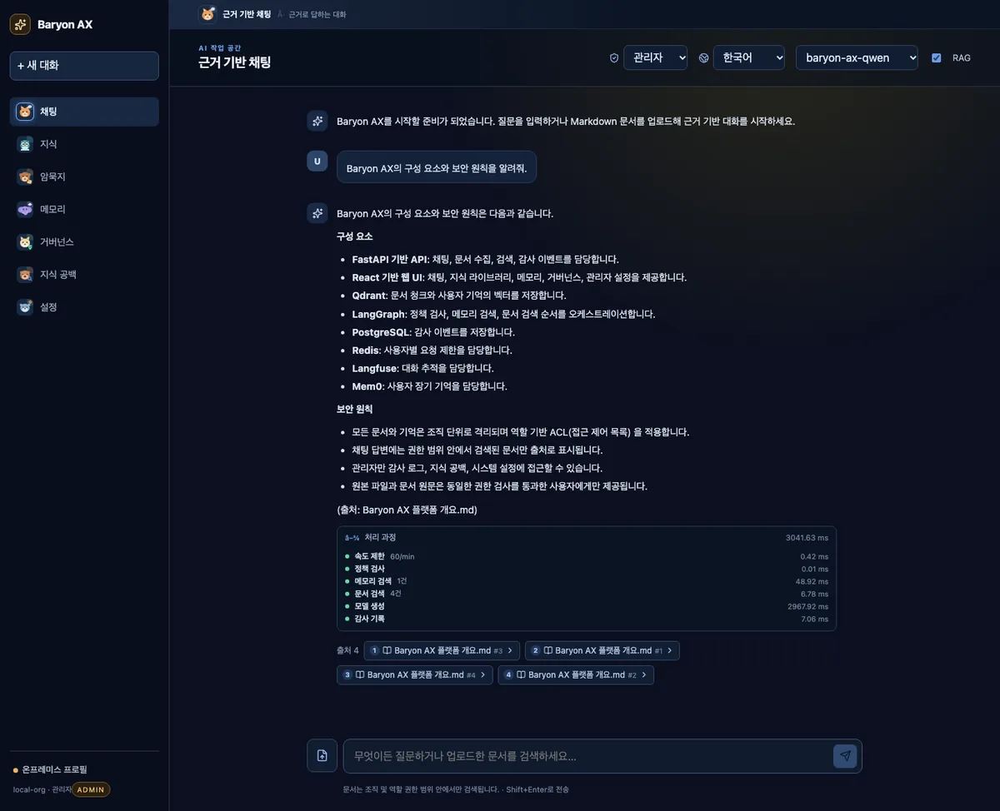
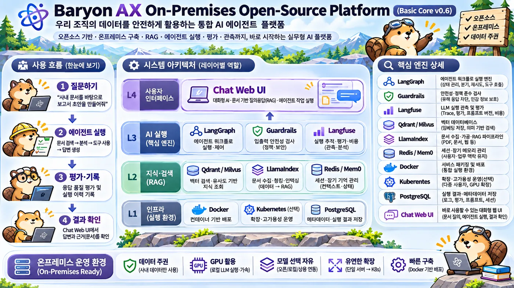
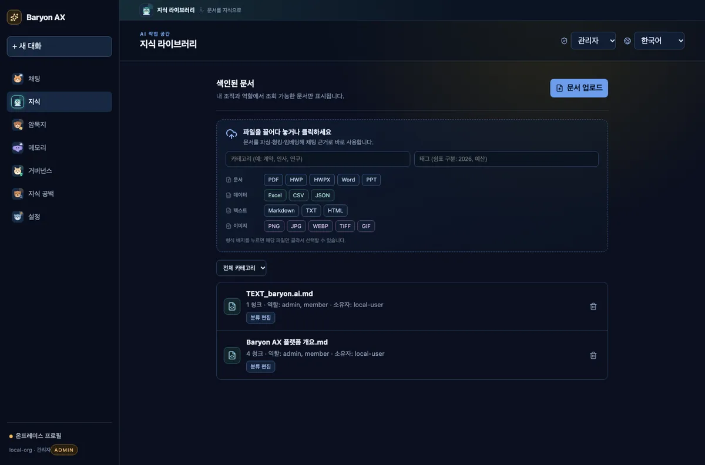
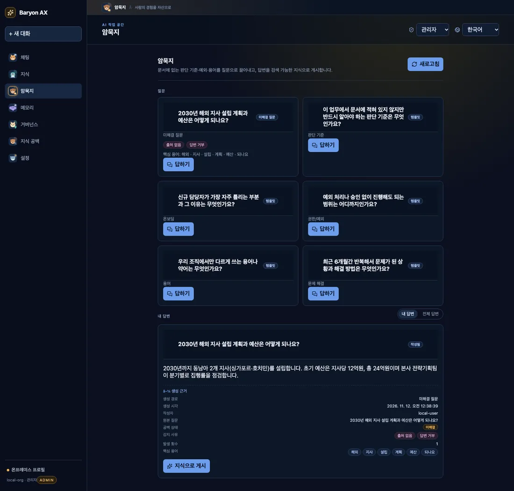
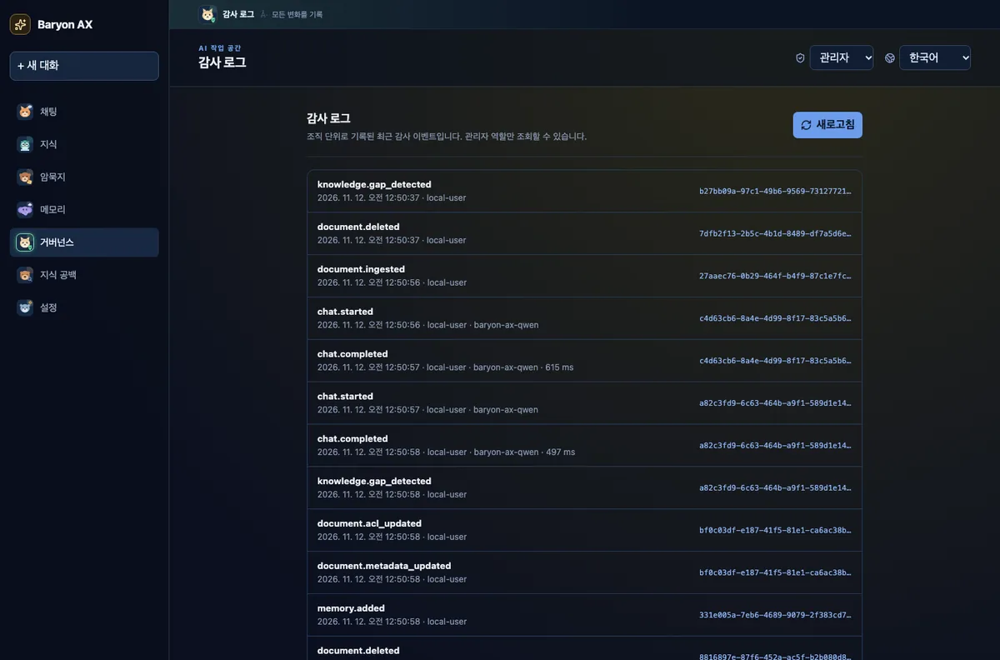

온프레미스 · 모델 비종속
Ollama, vLLM, OpenAI 호환 엔드포인트를 그대로 연결합니다. 데이터와 모델 선택을 고객이 통제하고, 특정 SaaS에 종속되지 않습니다.
v0.6.0 첫 릴리스 · Security CI 내장 · MIT
Baryon AX는 문서·암묵지·메모리를 연결해 출처가 있는 답을 만드는 온프레미스 AI 에이전트 플랫폼입니다.
Ollama·vLLM 등 OpenAI 호환 모델이면 무엇이든. 데이터는 고객 환경에 두고, 모든 답에는 검증 가능한 근거를 붙입니다.

Why Baryon AX
챗봇을 하나 더 얹는 것이 아니라, 조직의 지식이 실제로 검색되고 인용되고 감사되는 운영 모델을 만듭니다.
Ollama, vLLM, OpenAI 호환 엔드포인트를 그대로 연결합니다. 데이터와 모델 선택을 고객이 통제하고, 특정 SaaS에 종속되지 않습니다.
Qdrant + FastEmbed로 문서를 검색하고, 답변마다 출처와 청크를 표시합니다. 근거가 없으면 경고하고, 원문·원본 파일까지 권한 안에서 확인합니다.
조직·역할·문서 ACL, PostgreSQL 감사 이벤트, PII 마스킹, Langfuse 트레이스를 기본 구성에 포함합니다. 보안 CI가 PR마다 이를 검증합니다.

One workspace
문서 업로드, 검색, 답변, 피드백, 지식 공백, 암묵지 게시가 같은 워크스페이스에서 이어집니다.
스트리밍, 모델 선택, RAG 토글, 생성 중지·재생성·복사, 👍/👎 피드백, 처리 과정 trace.
HWP·HWPX·PDF·Office·이미지·텍스트를 MIME 기반으로 라우팅하고, 구조를 인식해 청킹합니다.
지식 공백 → 질문 → 답변 → 게시 → 검증 → 환류. 판단 기준과 예외 조건을 검색 가능한 지식으로 만듭니다.
근거를 찾지 못한 질문을 클러스터링하고, 필요한 데이터를 힌트로 제시하며 온톨로지 팩 초안을 만듭니다.
Mem0 기반 장기 기억을 저장·검색하고, 다음 답변에 관련도순으로 주입합니다.
조직·역할 ACL, 문서 권한 변경 감사, 최근 이벤트, 관리자 설정과 시스템 상태를 한 화면에서.
Langfuse 트레이스, 파이프라인 단계별 지연, 저장소·메모리·CPU·컨테이너 상태 카드.
B300 GPU 7 vLLM Qwen3.5-27B 검증, full-stack Compose, Kubernetes 스타터 매니페스트.
Real screens
Qwen3.5-27B(vLLM), Qdrant, PostgreSQL, Redis, Langfuse, Mem0가 연결된 상태에서 촬영했습니다.



Quick start
기본 구성은 외부 모델 없이 demo-local로 동작합니다. 실제 모델은 OpenAI 호환 엔드포인트를 지정하면 됩니다.
.env.example을 복사합니다. 기본값으로 바로 실행됩니다.git clone https://github.com/baryonlabs/baryon-ax.git
cd baryon-ax
cp .env.example .env
docker compose up --buildUI http://localhost:3001 · API http://localhost:8000 · 상태 확인 GET /health
Help
설치·모델·파서·검색·권한에서 가장 자주 만나는 문제와 해결 방법입니다. 더 자세한 내용은 저장소 문서에 있습니다.
MODEL_BASE_URL이 비어 있으면 데모 모델로 동작합니다. OpenAI 호환 엔드포인트와 모델 이름을 지정하세요. Ollama는 기본적으로 127.0.0.1에만 바인딩되므로 컨테이너에서는 프록시가 필요합니다.
MODEL_BASE_URL=http://host.docker.internal:11435/v1
MODEL_NAME=qwen2.5:7b기본 Compose에는 파서 사이드카가 포함되지 않습니다. parser 프로필을 함께 실행하고, KORDOC_URL·DOCLING_URL이 설정되어 있는지 확인하세요.
docker compose -f docker-compose.yml \
-f docker-compose.parsers.yml \
--profile parsers up -d --buildQDRANT_URL이 비어 있으면 lexical 폴백으로 동작합니다. Qdrant 연결 후 관리자 재색인을 실행하고, 문서 ACL·카테고리·태그 필터도 확인하세요.
curl -X POST http://localhost:8000/v1/admin/reindex \
-H 'X-User-Id: admin' \
-H 'X-Organization-Id: demo' \
-H 'X-Roles: admin'개발 환경에서는 X-Roles: admin 헤더로 역할을 지정합니다. 운영 환경에서는 이 개발용 identity 헤더를 OIDC/JWT로 교체해야 합니다.
X-User-Id: demo-admin
X-Organization-Id: demo
X-Roles: adminUI는 3001, API는 8000, Langfuse는 3000, PostgreSQL은 5433, Redis는 6379, Qdrant는 6333을 사용합니다. 기존 서비스가 있으면 docker-compose.yml의 포트를 바꾸세요.
lsof -i :3001
lsof -i :8000
docker compose ps문서·감사·피드백·암묵지 저장소는 Compose 볼륨과 /data 아래에 있습니다. 초기화 전에 반드시 백업하고, 운영 데이터에는 삭제 명령을 바로 쓰지 마세요.
docker compose logs -f api web
docker compose down
# 볼륨 삭제는 데이터 손실입니다. 백업 후 진행하세요.Basic Core는 2 vCPU, 4GB RAM, 10GB 디스크로 데모 모델을 실행할 수 있습니다. Qdrant·PostgreSQL·Redis·Langfuse·Mem0를 포함하는 Full stack은 8 vCPU, 16GB RAM(권장 32GB), 100GB 디스크를 권장합니다. GPU 추론은 7B 모델 기준 RTX 4090 24GB 1장부터 시작합니다. 전체 표는 하드웨어 요구사항에 있습니다.
외부 인터넷은 필수가 아닙니다. Docker 이미지·모델 가중치·패키지를 사전에 미러링하면 폐쇄망에서 동작합니다. 모델 서버와 데이터 저장소도 고객 네트워크 안에 둘 수 있습니다. 에어갭 구성은 저장소의 기능 문서를 참고하세요.
OpenAI 호환 API를 제공하는 모델이면 연결할 수 있습니다. Ollama qwen2.5:7b와 vLLM Qwen3.5-27B(B300 GPU 7) 구성이 검증되어 있습니다. 모델이 없을 때는 demo-local 폴백으로 UI와 흐름을 확인할 수 있습니다.
네. kordoc 사이드카가 HWP/HWPX를 파싱하고, docling이 PDF·Office·이미지를, Tika가 레거시 형식을 보완합니다. parser 프로필을 함께 실행해야 하며, MIME 기반으로 파서가 자동 라우팅됩니다.
문서 원본과 파싱 텍스트는 DOCUMENT_STORE에, 벡터는 Qdrant에, 감사 이벤트는 PostgreSQL과 JSONL 미러에, 메모리는 Mem0/Qdrant에 저장됩니다. 피드백·암묵지·지식 공백은 각각의 JSONL 저장소에 남습니다. 모든 저장소는 고객 환경 안에서 운영됩니다.
모든 PR은 security-sweep로 의존성 CVE·비밀값·설정 오류를 검사하고, P0/P1이면 머지를 차단합니다. 주 1회 이미지·SBOM·전체 git 히스토리 비밀값 스캔을 실행합니다. 운영 전 OIDC/JWT와 시크릿 관리 등은 보안 베이스라인을 따르세요.
MIT 라이선스입니다. 상업적 사용과 수정·배포가 가능하며, 저작권 고지를 유지해야 합니다. 자세한 내용은 LICENSE를 참고하세요.
GitHub Issues에 재현 절차와 기대 동작을 적어 주세요. 보안 취약점은 공개 이슈 대신 SECURITY.md의 비공개 절차를 따라 주세요. 코드 기여는 CONTRIBUTING.md를 참고하세요.
Security CI
알려진 취약점을 사람의 기억에 맡기지 않습니다. 모든 PR에서 의존성 CVE·비밀값·설정 오류를 결정적 스캐너로 검사하고, OSV로 실재를 확인한 뒤 P0/P1이면 머지를 막습니다.
주 1회 이미지와 SBOM, 전체 git 히스토리까지 추적합니다. 결과는 Job Summary와 아티팩트로 남아 감사 근거가 됩니다.
스캐너 커밋·Trivy action SHA·osv-scanner 체크섬 고정 · contents: read · 시크릿 미사용 · fail-closed. 보안 인증이 아닌 베이스라인이며, 로직 결함은 별도 SAST/리뷰가 필요합니다.
Documentation
설치부터 아키텍처, 운영, 보안, UX 원칙까지 저장소 문서에 정리되어 있습니다.